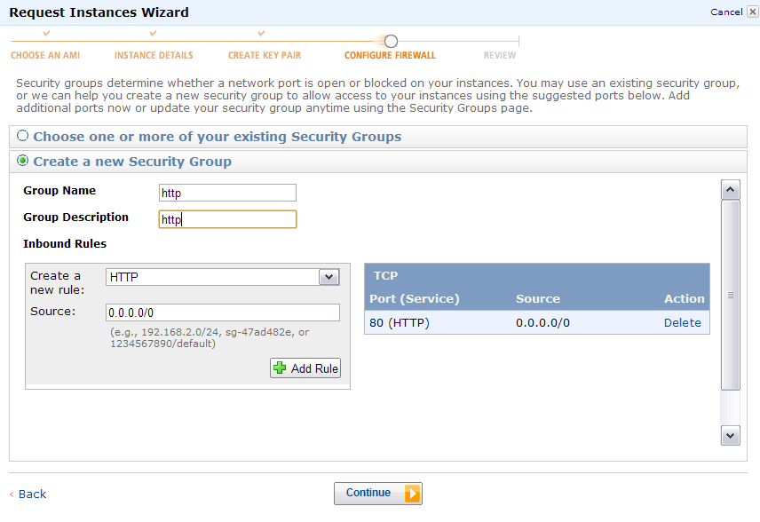

JABAWS MANUAL
How to use JABAWS on the Amazon EC2 cloud
- Create Amazon Web Services account.
- Log in into the Amazon Web Services (AWS) console. Make sure you are in the EU West (Ireland) region. JABAWS image is not available in other regions as yet. See marker 1.
- Click on "Launch Instance" button marker 2.
- Go to the "Community AMI" tab and search for JABAWS, then click select.
- Choose the "hardware" for your JABAWS server instance. "Large" instance should be sufficient for a single user needs. If you are planning to use this instance as a server for the lab, you may want to select a more powerful machine. Once you have chosen the hardware click continue.
- You should not need to customize anything on this page, continue to the next.
- At the "Create a key pair" step, choose "Proceed without a key pair" unless you want to access JABAWS server via SSH.
- Create a new security group with a single HTTP (80) port as shown below. You may want to add SSH (22) port if you are planning to manage your instance via SSH. For starting/stopping your JABAWS instance SSH is not necessary, you can do this from the Amazon Webservices Console (AWS). 
- Review the configuration and launch the instance, then click "view your instances on the Instances page".
- At this point you should have JABAWS instance up and running. Your AWS console should look something like this:
- Now you can consume JABAWS web services by accessing the public DNS address of your JABAWS server instance. For instance, to register it with Jalview, just add the new JABAWS web server. Prefix your instance public DNS address with http:// e.g. type: http://<public DNS>. The JABAWS instance on the screenshot can be accessed on http://ec2-46-137-50-196.eu-west-1.compute.amazonaws.com.
If you need to run JABAWS for large organization you might want to configure load balancer and auto scaling. Please get in contact with us if you are interested in exploring such configurations.